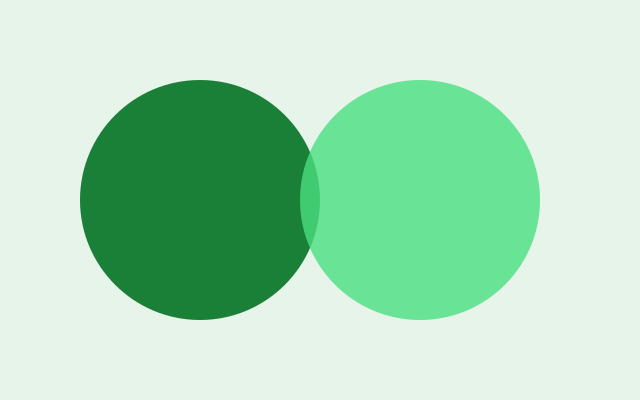
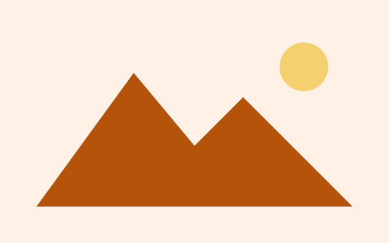

Groups fold
Each navigation group is a <details>, open by default. Close the ones you do not need.
The other layout
Every template ships two layouts. The navbar layout is on the overview, the blog post and the forms page; this page and the whole docs tree use the sidebar layout. On a wide screen the sidebar is a column; on a narrow one it is a drawer behind the menu button, and it closes on Esc or a tap outside.
A grid with two rows and, above 64rem, two columns. The top bar spans both columns and stays put; the sidebar is a sticky column with its own scrollbar; the page scrolls under it. Below 64rem the sidebar carries the popover attribute, so the menu button is a real button that opens it, and the browser supplies the dimmed backdrop and the dismiss behaviour.
Each navigation group is a <details>, open by default. Close the ones you do not need.

The link to the page you are on carries aria-current="page", which is also what styles it.

Nothing on this page needs the sidebar. Swap the shell and the page still works.

Fifty-fifty
The same block the overview uses, here to prove it sits happily inside the narrower column.
DocsNot in this version. The drawer behaviour is for narrow screens only; on a wide screen the column is always there.
No. It is a popover: it opens when asked and closes when dismissed, and there is nothing to remember.